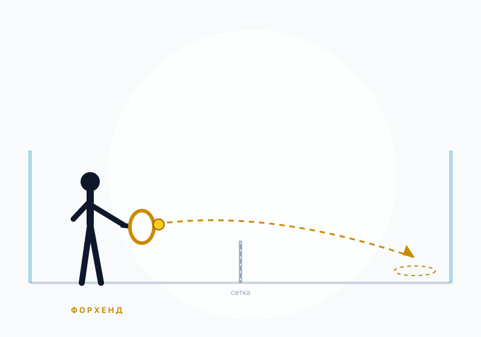
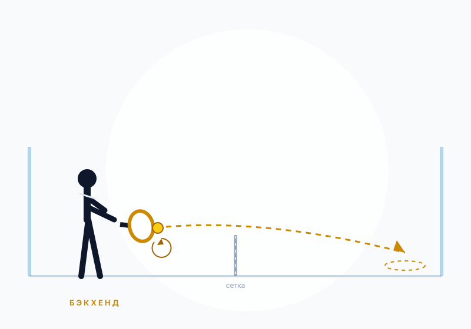
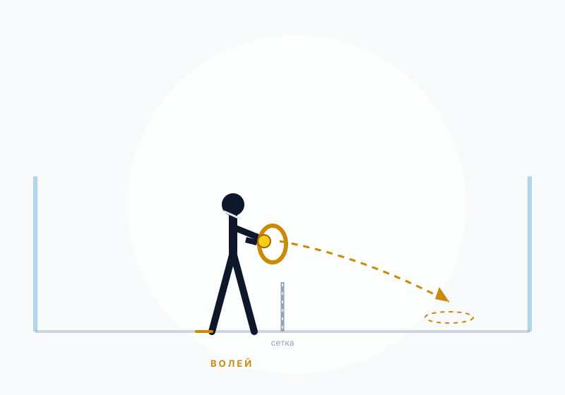
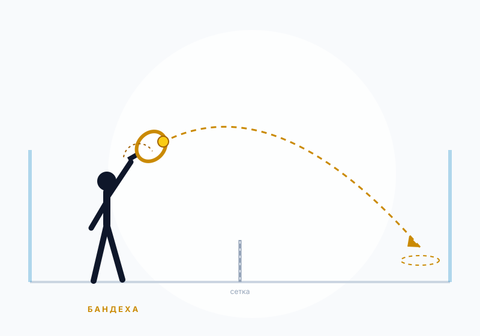
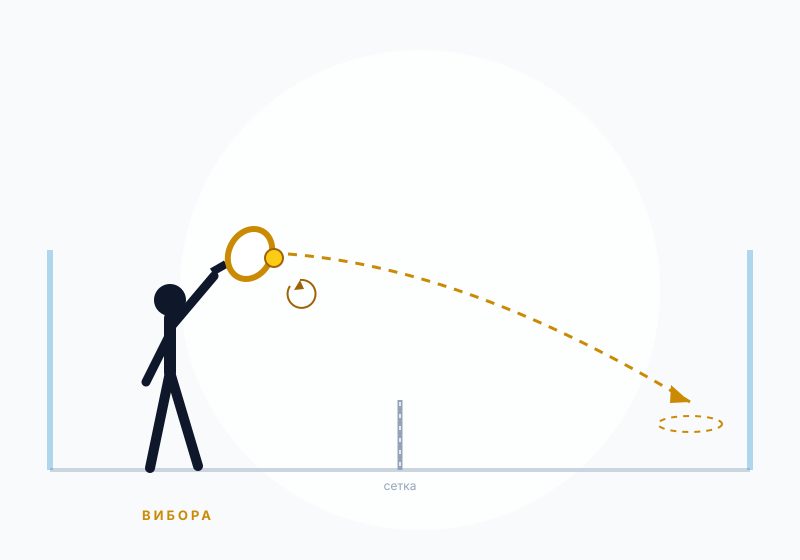
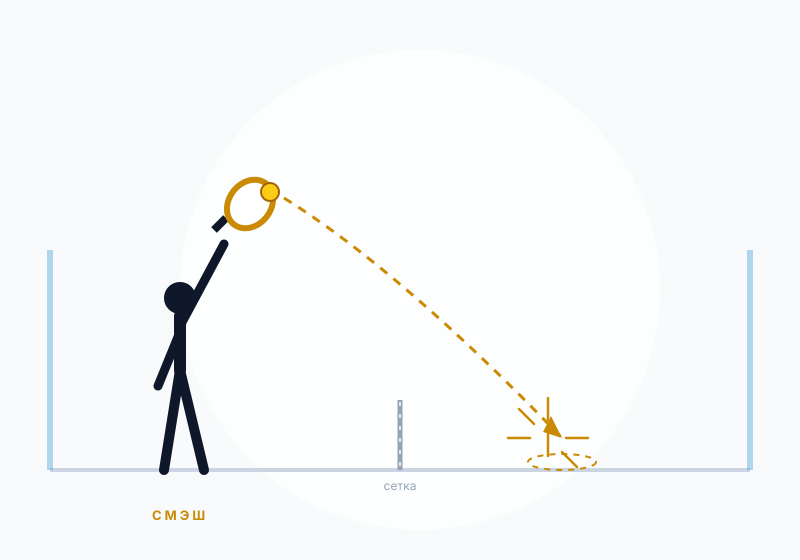
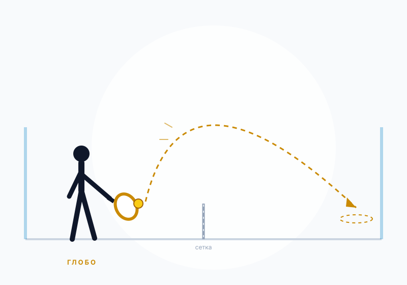
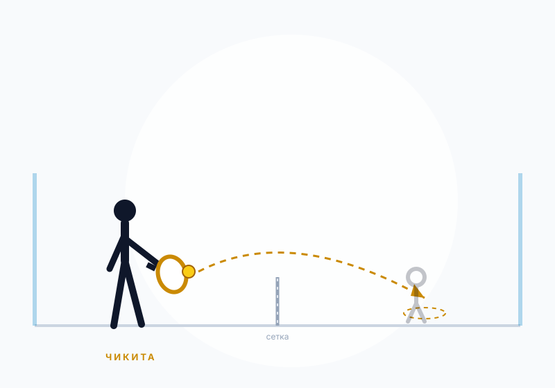
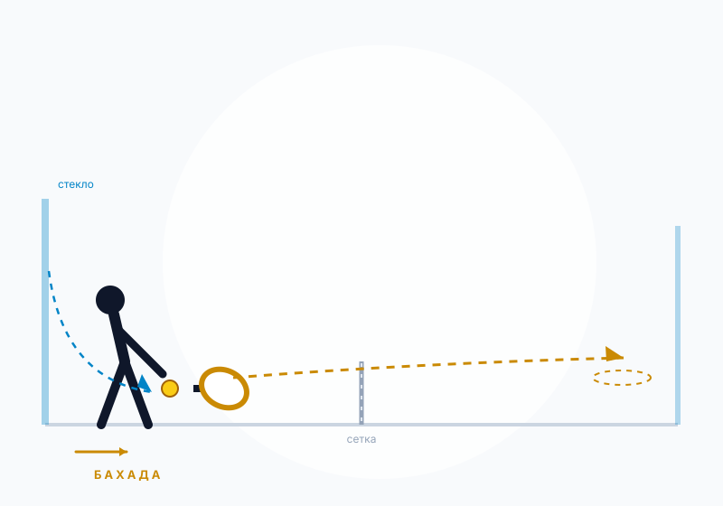
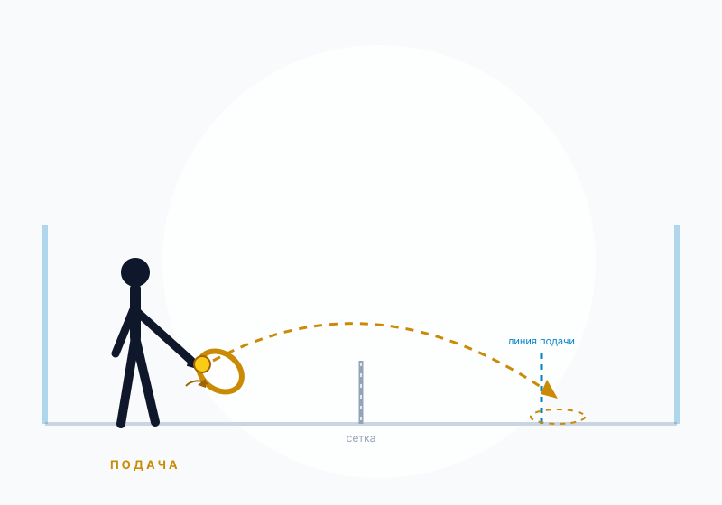

Базовый удар
Форхенд
Forehand drive
Основной удар справа. Именно с него начинается большинство атак: он даёт контроль, силу и удобную подготовку к выходу к сетке.
Десять ударов, которые закрывают почти все игровые ситуации. Для каждого — когда применять, как выполнять и на что обратить внимание. Схемы показывают направление полёта мяча и точку приземления.

Основной удар справа. Именно с него начинается большинство атак: он даёт контроль, силу и удобную подготовку к выходу к сетке.

Удар слева. В паделе его чаще играют плоско или с подрезкой — задача не столько ускорить мяч, сколько удержать его низко и в глубине корта.

Удар с лёта до отскока мяча. В паделе это главный способ удержать инициативу: пара, стоящая у сетки, диктует розыгрыш.

«Поднос» — защитный удар сверху с подрезкой. Он не выигрывает очко сразу, но не даёт соперникам атаковать: мяч летит глубоко и низко отскакивает от стекла.

Более агрессивная версия бандехи. Мяч получает боковое вращение и после приземления уходит в боковое стекло, затрудняя приём.

Мощный удар сверху, который заканчивает розыгрыш. В профессиональном паделе смэш часто направляют так, чтобы мяч покинул корт через стекло — «por 3» или «por 4».

Высокая свеча в глубину корта. Главный защитный инструмент: она выбивает соперников от сетки и даёт вам время вернуть позицию.

Мягкий низкий удар под ноги соперникам у сетки. Его задача — заставить их отбивать мяч снизу и дать вашей паре время выйти к сетке.

Атака низкого мяча после отскока от заднего стекла. Игрок двигается вперёд и переводит защиту в атаку одним плоским ударом.

Ввод мяча в игру ударом снизу. Хорошая подача в паделе — не про силу, а про точность и низкий отскок от стекла.
Техника становится понятнее, когда видишь её в движении.